ＭＳヘルプはＳＱＬ，ＤＡＯ，ＡＤＯに関する記述を素直に検索できないのが 非っ常に不満。 以下の場所にあったりするので、直接ファイルを読もう。 C:\Program Files\Common Files\Microsoft Shared\OFFICE11\1041 以下の DAO360.CHM ADO210.CHM JETSQL40.CHMindex
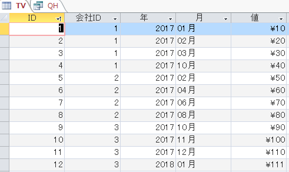
TRANSFORM Sum(TV.値) AS 値の合計
SELECT TV.会社ID, TV.年
FROM TV
GROUP BY TV.会社ID, TV.年
ORDER BY TV.会社ID
PIVOT TV.月 In ('01月','02月','03月','04月','05月','06月','07月','08月','09月','10月','11月','12月');
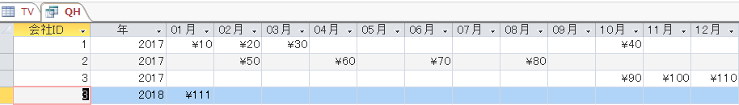
Transform の Inner Join 式はACCESSにとってイレギュラーな書き方らしく、 クエリに保存しても、式を何かのタイミングで書き換えてしまい、気が付くと 壊れていた、という経験を何度かした。VBA上に記述して使うように。 一番外側のフィールド名を角括弧 [] で囲むことは重要。
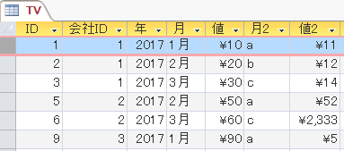
SELECT q1.会社ID, q1.年, q1.[1月], q1.[2月], q1.[3月], q3.[a], q3.[b], q3.[c]
FROM
(SELECT q.* FROM
[TRANSFORM Sum(q.値) AS 値の合計 SELECT q.会社ID, q.年
FROM (SELECT TV.会社ID, TV.年, TV.値, TV.月 FROM TV) AS q
GROUP BY q.会社ID, q.年 PIVOT q.月 In ('1月','2月','3月');]. as q
) AS q1
INNER JOIN
(SELECT q2.* FROM
[TRANSFORM Sum(q2.値) AS 値の合計 SELECT q2.会社ID, q2.年
FROM (SELECT TV.会社ID, TV.年, TV.値, TV.月2 FROM TV) AS q2
GROUP BY q2.会社ID, q2.年 PIVOT q2.月2 In ('a','b','c'); ]. as q2
) AS q3
ON (q1.年 = q3.年) AND (q1.会社ID = q3.会社ID);
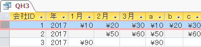
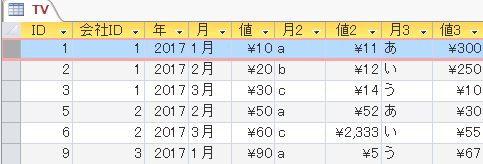
SELECT q3.会社ID, q3.年, q1.[1月], q1.[2月], q1.[3月], q3.[a], q3.[b], q3.[c], q5.[あ], q5.[い], q5.[う]
FROM (SELECT q0.*
from
[
TRANSFORM Sum(q0.値) AS 値の合計
SELECT q0.会社ID, q0.年
FROM (SELECT TV.会社ID, TV.年, TV.値, TV.月3 FROM TV) AS q0
GROUP BY q0.会社ID, q0.年
PIVOT q0.月3 In ('あ','い','う');
]. as q0
) AS q5 I
NNER JOIN
(SELECT q3.会社ID, q3.年, q1.[1月], q1.[2月], q1.[3月], q3.[a], q3.[b], q3.[c]
FROM
(SELECT q.*
from
[
TRANSFORM Sum(q.値) AS 値の合計
SELECT q.会社ID, q.年
FROM (SELECT TV.会社ID, TV.年, TV.値, TV.月 FROM TV) AS q
GROUP BY q.会社ID, q.年
PIVOT q.月 In ('1月','2月','3月');
]. as q
) AS q1
INNER JOIN
(SELECT q2.*
from
[
TRANSFORM Sum(q2.値) AS 値の合計
SELECT q2.会社ID, q2.年
FROM (SELECT TV.会社ID, TV.年, TV.値, TV.月2 FROM TV) AS q2
GROUP BY q2.会社ID, q2.年
PIVOT q2.月2 In ('a','b','c');
]. as q2
) AS q3
ON (q1.年 = q3.年) AND (q1.会社ID = q3.会社ID)
) AS q4 ON (q4.会社ID = q5.会社ID) AND (q4.年 = q5.年);
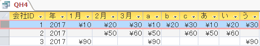
Option Compare Database
Option Explicit
'ADO、ADOXで他データベースのTABLEをインポートする
'tgtDBのコンテンツを一度有効にしてから実行しないとセキュリティの警告がテーブルの数だけ表示される
Sub importAllTables()
Dim tgtDBPath As String
tgtDBPath = CurrentProject.Path & "\住所録.mdb"
Dim cnctStr As String
cnctStr = _
"Provider=Microsoft.ACE.OLEDB.12.0;User ID=Admin;Data Source=" & tgtDBPath & ";"
Dim cn As Object 'ADODB.Connection
Dim ctlg As Object 'ADOX.Catalog
Dim tbl As Object 'ADOX.Table
Set cn = VBA.CreateObject("ADODB.Connection")
Set ctlg = VBA.CreateObject("ADOX.Catalog")
cn.Open cnctStr
ctlg.ActiveConnection = cn
For Each tbl In ctlg.Tables
'システムテーブルは取り込まない
'acTable を差し替えればモジュールをを取り込める（たぶん）
If tbl.Type = "TABLE" Then
DoCmd.TransferDatabase acImport, "Microsoft Access", tgtDBPath, acTable, tbl.Name, tbl.Name
End If
Next
End Sub
'自DBのテーブル名とタイプをADOXで書き出し
Sub printTableNameAndType()
Dim tbl As ADOX.Table
Dim ctlg As New ADOX.Catalog
ctlg.ActiveConnection = CurrentProject.Connection
For Each tbl In ctlg.Tables
Debug.Print tbl.Name, tbl.Type
Next
End Sub
Option Compare Database
'module1
Option Explicit
'データシートビューのフォームの列をオートフィットする
Sub autofit(fm As Object)
Dim ctl As Control
Const cnsAutoFit As Long = -2
Const cns非表示 As Long = 0
For Each ctl In fm.Controls
If _
(ctl.ControlType = acTextBox) Or _
(ctl.ControlType = acComboBox) Or _
(ctl.ControlType = acCheckBox) Then
Select Case ctl.Name
'オプション
Case "ID"
ctl.ColumnWidth = 1000 '1cm:567twips
Case Else
ctl.ColumnWidth = cnsAutoFit
End Select
End If
Next
End Sub
Option Compare Database
Option Explicit
'form2
Private Sub Form_Open(Cancel As Integer)
On Error GoTo err_handle
Call Module1.autofit(Me.f.Form) 'サブフォーム
Call Module1.autofit(Me.埋め込み15.Form) 'サブフォーム
Call Module1.autofit(Me.f_のコピー.Form.f.Form) 'サブフォームのサブフォーム
end_handle:
Exit Sub
err_handle:
MsgBox Err.Description, vbExclamation, CurrentProject.Name
Resume end_handle
End Sub
'フォームにリストボックス list1 を用意して
'コマンド1_Click を実行後、btn_Click で動作確認してから使う
Private Sub コマンド1_Click()
With list1
.RowSource = ""
.RowSourceType = "value list"
.ColumnCount = 2
.ColumnWidths = "2cm;2cm"
.AddItem "Title;Theme"
.AddItem "a;apple"
.AddItem "b;ball"
.AddItem "c;cap"
.AddItem "d;dog"
.ColumnHeads = True
End With
End Sub
Private Sub btn_Click()
'リストボックスで選択した項目を上下に移動
Call selectedMove(True)
End Sub
'リストボックスで選択した項目を上下に移動
Private Sub selectedMove(IsUpmode As Boolean)
Dim n As Long
Dim v
Dim items As New Collection
Dim keys As New Collection
Dim direction As Long
If IsUpmode Then
direction = -1
Else
direction = 1
End If
With list1
If .ItemsSelected.Count = 0 Then Exit Sub
For Each v In .ItemsSelected
items.Add .Column(0, v) & ";" & .Column(1, v)
keys.Add v
Next
If IsUpmode Then
If keys(1) + direction <= IIf(.ColumnHeads, 0, -1) Then
Exit Sub
End If
For n = 1 To keys.Count
If keys(n) + direction > IIf(.ColumnHeads, 0, -1) Then
.RemoveItem keys(n)
.AddItem items(n), keys(n) + direction
End If
Next
End If
If IsUpmode = False Then
If keys(keys.Count) + direction >= .ListCount Then
Exit Sub
End If
For n = keys.Count To 1 Step -1
If keys(n) + direction < .ListCount Then
.RemoveItem keys(n)
.AddItem items(n), keys(n) + direction
End If
Next
End If
For n = 1 To keys.Count
.Selected(keys(n) + direction) = True
Next
End With
End Sub
Sub サブフォームを含むコントロール部品へのアクセス()
Dim frm As Form
DoCmd.OpenForm ("フォーム")
Set frm = Forms!フォーム
Call コントロール部品の書き出し(frm)
End Sub
Sub コントロール部品の書き出し(fm As Object)
Dim ctrl As Access.Control
For Each ctrl In fm.Controls
Debug.Print ctrl.Name & " " & TypeName(ctrl)
If TypeOf ctrl Is SubForm Then
Call コントロール部品の書き出し(ctrl)
End If
Next
End Sub
Option Explicit
'ADOのトランザクション処理
Sub transactionADO()
Dim adoCn As ADODB.Connection
Set adoCn = CurrentProject.Connection
adoCn.BeginTrans
Dim sql As String
sql = "delete * from t1"
adoCn.Execute sql
Stop
'ここで t1 テーブルに新規レコードを追加しようとしても
'テーブルがロックされているので追加できない。
sql = "insert into t1 (f1) values('a')"
adoCn.Execute sql
If CBool(adoCn.Errors.Count) Then
adoCn.RollbackTrans
Dim dbErr As ADODB.Error
Dim lstMsg As String
For Each dbErr In adoCn.Errors
lstMsg = lstMsg & dbErr.Description & vbNewLine
Next
lstMsg = lstMsg & String(2, vbNewLine) & "登録中にエラー。操作はキャンセルされました。"
Err.Raise 65535, , lstMsg, CurrentProject.Name
Else
adoCn.CommitTrans
MsgBox "登録されました", vbInformation, CurrentProject.Name
End If
End Sub
'変数をモジュールレベルにしておかないと
'プロシージャを抜けた途端解放されて消滅してしまう。
'見せたくないならそれもアリだが。
Private app As Access.Application
'このロジックを使えば他DBのリンクテーブルの貼り直しも思いのまま
Sub 他のACCESSファイルのテーブルにアクセスする()
Dim db As DAO.Database
Set app = New Access.Application
'OpenCurrentDababase は「起動」という雰囲気では開かない
'別ACCESSを起動させたいなら「ACCESSの起動」が吉
app.OpenCurrentDatabase "C:\Users\yama\Desktop\a.accdb", Exclusive:=True
Set db = app.CurrentDb
app.Visible = True
Debug.Print db.TableDefs("テーブル1").Fields.Count
End Sub
Sub ACCESSの起動()
Const vbMaximizedFocus = 3 '最大化、最前面のウィンドウ
Dim bWaitOnReturn As Boolean
Dim strPath As String
Dim f As Object
strPath = "C:\Users\yama\Desktop\a.accdb"
Set f = VBA.CreateObject("Scripting.FileSystemObject").GetFile(strPath)
'strPath = f.ShortName RUNメソッドはショートネームで指定しろ、と書いてあるが、実際ショートネームを指定すると失敗する
bWaitOnReturn = False
'処理待ちしていすると"処理を待つことが出来ません"というエラーになる、最大化の指定も無視された
VBA.CreateObject("WScript.Shell").Run strPath, vbMaximizedFocus, bWaitOnReturn
End Sub
VBAを使ってナビゲーションウィンドウを非表示にしたい場合は、以下の様なコマンドを実行します。
http://propg.ee-mall.info/%E3%83%87%E3%83%BC%E3%82%BF%E3%83%99%E3%83%BC%E3%82%B9/access2010-%E3%83%8A%E3%83%93%E3%82%B2%E3%83%BC%E3%82%B7%E3%83%A7%E3%83%B3%E3%82%A6%E3%82%A3%E3%83%B3%E3%83%89%E3%82%A6%E3%82%92%E9%9A%A0%E3%81%99/
Sub HideNavigationPane()
DoCmd.NavigateTo "acNavigationCategoryObjectType", ""
DoCmd.RunCommand acCmdWindowHide
End Sub
この場合は、ナビゲーションウィンドウそのものが完全に非表示になり、再度表示させるためには、
プログラムから表示させるか、ショートカットキーを使う必要があります。
プログラムから表示させる場合は、以下の様なコマンドです。
Sub ShowNavigationPane()
DoCmd.NavigateTo "acNavigationCategoryObjectType", ""
DoCmd.RunCommand acCmdWindowShow
End Sub
隠している場合にわざわざ表示させる場面はあまりないと思いますが…
普段はナビゲーションウィンドウは不要だけど、たまに使いたい時があるような場合は、
完全に消すのではなく、最小化状態にしておいたほうが使い勝手は良いです。
Sub MinimuizeNavigationPane()
DoCmd.NavigateTo "acNavigationCategoryObjectType", ""
DoCmd.RunCommand acCmdDocMinimize
End Sub
最小化しておけば、クリックするだけで再度ナビゲーションウィンドウを表示させることができます。
sample
'daoで自mdb内 Table に INSET INTO
Sub daoVer()
Dim db As DAO.Database
On Error Resume Next
Set db = Application.CurrentDb
sql = "insert into " & cnTdest
sql = sql & " select * from " & cnTsource
'dbFailOnError：エラー発生でロールバックします
db.Execute sql, dbFailOnError
Set db = Nothing
If Err.Number = 0 Then
MsgBox "done"
Else
MsgBox "error"
End If
End Sub
'ado接続で自mdb内 Table に INSET INTO
Sub adoVer()
Dim cn As ADODB.Connection
On Error Resume Next
Set cn = CurrentProject.Connection
sql = "insert into " & cnTdest
sql = sql & " select * from " & cnTsource
cn.BeginTrans
cn.Execute sql
cn.CommitTrans
If Err.Number = 0 Then
MsgBox "done"
Else
MsgBox Err.Description
cn.RollbackTrans
End If
Set cn = Nothing
End Sub
■リストボックスの選択
Private Sub Form_Open(Cancel As Integer)
'フォームオープン時にリストの
'最終行から一つ前を選択させるサンプル
With Me.list1
.Selected(.ListCount - 2) = True
End With
'無いとフォーム上のコントロールが選択出来なくなる。
'↓必要：
Me.Requery
End Sub
'フォーム。データシートビューで列の AutoFit
Private Sub Form_Open(Cancel As Integer)
Dim ctrl As Control
'-2 は列の幅ダイアログの[自動調整(B)]に当たるらしい
'この定数は既定では用意されていない
Const cnsAutoFit As Long = -2
For Each ctrl In Me.Controls
If ctrl.ControlType = acTextBox Then
ctrl.ColumnWidth = cnsAutoFit
End If
Next
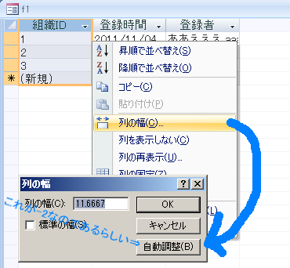
End Sub
ファイル／フォルダー取得ダイアログ
Yu_tangさんのファイルフォルダーピッカー
'ファイル/フォルダーピッカー
'Microsoft OfficeXX.X Object Library参照設定要
'ファイル参照ダイアログを表示してファイルパスを返します
'ファイル種類のFilters はAC2000では無視されます。
'このコードはエクセルVBAでも同じです。
'引数省略可：ダイアログのタイトル
Function filePicker(Optional dlgTitle As String) As Variant
Dim fd As FileDialog
Set fd = Application.FileDialog(msoFileDialogFilePicker)
With fd
.Title = dlgTitle
If Application.Version > 10 Then
.Filters.Clear
.InitialFileName = ""
'Position引数はドロップダウンに表示される順番
.Filters.Add "エクセルかCSV", "*.xls,*.csv", Position:=1
'.Filters.Add "hoge", "*.mdb,*.*"
'.FilterIndex = 1 'デフォルト "hoge", "*.mdb,*.*"" で絞られる
End If
'複数ファイル選択
' .AllowMultiSelect = False
'
' If .Show Then
' '.Execute ファイルを開くmsoFileDialogOpenの時に使えるメソッド
' filePicker = .SelectedItems(1)
' End If
.AllowMultiSelect = True
If .Show Then
Set filePicker = .SelectedItems
End If
End With
Set fd = Nothing
End Function
'ファイルピッカーのテスト
Sub test()
Dim s As String
'Debug.Print filePicker("hogehoge")
Dim v As Variant
For Each v In filePicker("gehogeho")
Debug.Print v
Next
End Sub
テーブル、クエリーのレコード数を返します。テーブルのレコード数は
'CurrentDb.TableDefs(テーブル名).RecordCount
で求めるのが最も高速です。が、リンクテーブルのレコード数を数える事が出来ません。
また、QueryDefs は RecordCount プロパティを持ちません。
DAO ADO 何れかの Recordset オブジェクトの RecordCount プロパティは、
DAO は MoveLast しないとカウントできず、ADOに至っては RS.EOF まで総なめで
i = i + 1 していかないとカウントできません（たぶん）。
集計SQLの結果を取得するやり方が、高速に数えられる方法です。
ADO/DAO どちらが高速かという程の違いはないと思われます。
'DAO
Function getRecCnt(TbleOrQryName As String) As Long
Dim sql As String
Dim rs As dao.Recordset
sql = "SELECT COUNT(*) AS CNT FROM " & TbleOrQryName
Set rs = CurrentDb.OpenRecordset(sql)
getRecCnt = rs!CNT
End Function
'ADO
Function getRecCnt(TbleOrQryName As String) As Long
Dim cn As ADODB.Connection
Dim rs As ADODB.Recordset
Set cn = Access.CurrentProject.Connection
Set rs = cn.Execute("select count(*) as recCnt from " & TbleOrQryName)
getRecCnt = rs!recCnt
End Function
レコードの追加を許可していないフォームや、 [Tabキー移動]プロパティを[カレントレコード]にしたフォームでは Tabキーをいくら連打しても、次のレコードに移動しないので レコードの保存の操作に戸惑ったり、保存しないままディフォルトのエラーメッセージが 表示されユーザーを困惑させる事態になるかもしれない。 編集中のレコードを保存するするには、
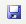
をクリックするか、Alt+sの操作をしないと保存できないので、 みたいな機能をつけておくのがいいと思う。
Function レコードの保存()
On Error GoTo レコードの保存_Err
With CodeContextObject
On Error Resume Next
If (.Form.Dirty) Then
DoCmd.RunCommand acCmdSaveRecord
End If
If (.MacroError.Number <> 0) Then
Beep
MsgBox .MacroError.Description, vbOKOnly, ""
Exit Function
End If
On Error GoTo 0
DoCmd.GoToRecord , "", acNewRec
DoCmd.GoToControl "Title"
End With
レコードの保存_Exit:
Exit Function
レコードの保存_Err:
MsgBox Error$
Resume レコードの保存_Exit
End Function
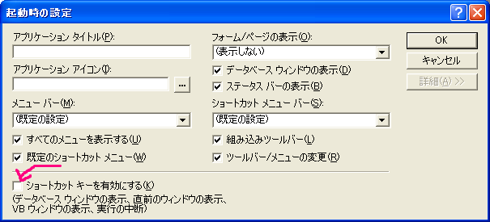
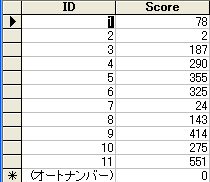
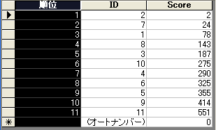
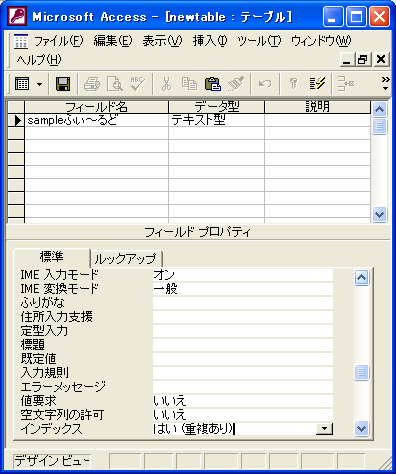
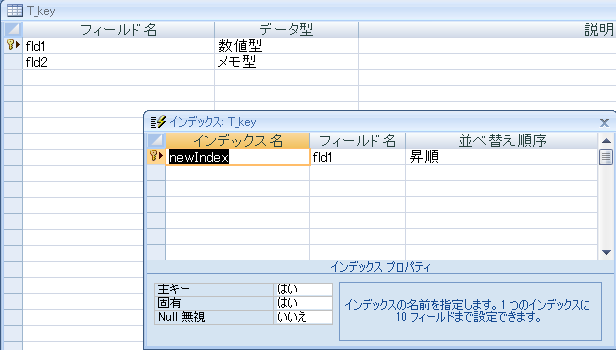
HAVING 句は省略可能です。
HAVING 句は WHERE 句と似ていますが、次のような違いがあります。
WHERE 句は選択するレコードを決めるために使用しますが、HAVING 句は、GROUP BY 句でグループ化したレコードの中でどのレコードを表示するのかを決めるために使用します。
例を次に示します。
SELECT 種類コード, Sum(在庫) FROM 製品 GROUP BY 種類コード HAVING Sum(在庫) > 100 And Like "BOS*";
HAVING 句には、And や Or などの論理演算子を組み合わせて最大 40 個までの式を指定できます。
'-------------------------■郵便番号フィールドの更新
'MS ACCESS用の郵便番号辞書をUPDATEした時の郵便番号更新 'SendKeysをループする処理なので実行速度は遅い '住所の値に半角スペースを追加する更新をする事で郵便番号の更新を促す。 'コードの後半で追加したスペースをtrim関数で取り除いている。 'Ac2007で動作確認してます
エクセルユーザー定義関数 - 郵便番号と住所を変換する方法内で 使用しているAPI関数はACCESSでもそのまま利用できますので、 そっち使う方がよっぽどスマートで高速です。
Function 郵便番号更新()
Dim db As DAO.Database
Dim t As DAO.TableDef
Dim rs As DAO.Recordset
Dim tname As String, fname As String
Dim i As Long, j As Long
Dim st As String
On Error GoTo err_handle
i = 0
tname = "T_郵便番号チェック"
'住所フィールドは１列目に作成する。
'Sendkeysは動作の保証がないため、列の移動は
'予期せぬフィールドの値を破壊しかねない。
fname = "住所"
Set db = Application.CurrentDb
Set t = db.TableDefs(tname)
Set rs = db.OpenRecordset("select count(*) from " & tname)
'recordcountプロパティより動作が速い上に
'recordcountの返す値を信じて良いものか懐疑的
i = rs.Fields(0).Value
'テーブルを開き直すことでフォーカスを
'テーブルの一行目レコードに
'移動できる
On Error Resume Next
DoCmd.Close acTable, t.Name
On Error GoTo err_handle
DoCmd.SetWarnings False
DoCmd.OpenTable t.Name, acViewNormal, acEdit
'描画停止
DoCmd.Echo False
For j = 1 To i
SendKeys "{f2}", True
SendKeys " ", True
SendKeys "{down}", True
Next j
Set rs = db.OpenRecordset(tname, dbOpenTable)
Do Until rs.EOF
st = rs.Fields(0).Value
With rs
.Edit
.Fields(0) = Trim(st)
.Update
.MoveNext
End With
Loop
MsgBox "done"
end_handle:
DoCmd.SetWarnings True
DoCmd.Echo True
Set db = Nothing
Set rs = Nothing
Exit Function
err_handle:
MsgBox Err.Number & ":" & Err.Description, vbExclamation, db.Name
Resume end_handle
End Function
以下はボタンを点滅させているコード。３０秒ごとにレコードを再クエリする コードと、フォームの再クエリなどすれば表示の更新が可能。 ACCESSのフォームにはTimerイベントなんてものがある。
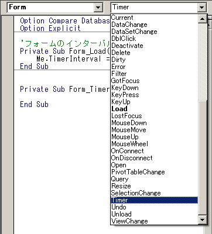
Option Compare Database
Option Explicit
'---------------------------------
'フォームの描写を一定時間ごとに
'更新する
'---------------------------------
'フォームのインターバル時間の指定
Private Sub Form_Load()
Me.TimerInterval = 1000 '1000ミリ秒
End Sub
'Timerイベント
Private Sub Form_Timer()
Static intShow As Integer
If intShow Then
Me.btn1.Transparent = True
Else
Me.btn1.Transparent = False
End If
intShow = Not intShow
End Sub
Option Compare Database
Option Explicit
'--------------------------
'フォーム1 モジュール
'--------------------------
Private Sub Form_Current()
'フォーム展開時はCurrentイベントの処理を実行しない
If Me.Visible = False Then Exit Sub
'レコード移動時の処理(ここではMsgBoxで代用)
MsgBox "Currentイベントの処理を実行します。"
End Sub
'指定件数ID昇順で選択状態にする。
'ただし、選択するのはF1が a のレコードのみ。
'選択したら a を b に更新する。
Private Sub ボタン_Click()
Dim i As Long
Dim v As Variant
Dim varReturn As Variant
Dim doneCnt As Long
Dim Num As Long
Dim t1 As Single
t1 = Timer()
On Error GoTo err_handle
Num = Nz(txtNum, 0)
If Num = 0 Then Exit Sub
lblShinchoku.Visible = True
Repaint
DoCmd.Hourglass True
'効果が僅かで見た目退屈な分デメリット
'DoCmd.Echo False
With listBx
'初期化
For Each v In .ItemsSelected
.Selected(v) = False
Next v
For i = 0 To .ListCount - 1
If .Column(1, i) = "a" Then
.Selected(i) = True
doneCnt = doneCnt + 1
If doneCnt > Num Then
Exit For
End If
End If
.Requery
Next i
End With
Debug.Print "Timer() - t1 : " & Timer() - t1
Beep
MsgBox "done"
end_handle:
DoCmd.Echo True
DoCmd.Hourglass False
lblShinchoku.Visible = False
Exit Sub
err_handle:
MsgBox Err.Description, vbExclamation, Access.CurrentObjectName
Resume end_handle
End Sub
Sub aaa()
CurrentDb.Execute "update T1 set F1 ='a'"
End Sub
Private Sub ボタン2_Click()
Dim i As Long
Dim v As Variant
On Error GoTo err_handle
DoCmd.Hourglass True
With listBx
For Each v In .ItemsSelected
CurrentDb.Execute _
"update T1 set F1='b' " & _
"where T1.ID=" & .Column(0, v)
.Requery
Next v
End With
end_handle:
DoCmd.Hourglass False
listBx.Requery
MsgBox "done"
Exit Sub
err_handle:
MsgBox Err.Description, vbExclamation, Access.CurrentObjectName
Resume end_handle
End Sub
Sub シフトキー起動を無効にする()
On Error Resume Next
CurrentDb.Properties.Delete ("AllowBypassKey")
On Error GoTo 0
Dim prp As Variant
Set prp = CurrentDb.CreateProperty("AllowBypassKey", DB_BOOLEAN, False)
CurrentDb.Properties.Append prp
End Sub
Sub シフトキー起動を有効にする()
On Error Resume Next
CurrentDb.Properties.Delete ("AllowBypassKey")
On Error GoTo 0
Dim prp As Variant
Set prp = CurrentDb.CreateProperty("AllowBypassKey", DB_BOOLEAN, True)
CurrentDb.Properties.Append prp
End Sub
Option Compare Database
Option Explicit
'フォームモジュール
'フォームを閉じるとACCESSも終了し、
'他の利用者がテーブルにアクセスしていなければ（ロックファイルが存在しなければ）
'このサンプルはバックエンドが一つだけの場合を想定しています
Private Sub btmAppQuit_Click()
'最適化
Call CompactDBbe
Application.Quit
End Sub
Private Sub CompactDBbe()
Dim bepath As String
Dim rs As DAO.Recordset
Set rs = CurrentDb.OpenRecordset("select database from MSysObjects where database is not null")
dbbe = CStr(rs!Database)
Dim lockFilePth As String
lockFilePth = Left$(dbbe, InStrRev(dbbe, ".")) & "laccdb"
'ロックファイルの有無
If VBA.CreateObject("scripting.filesystemobject"). _
FileExists(lockFilePth) = False Then
Dim vRslt
vRslt = _
Shell("MSACCESS.exe " & dbbe & " /compact")
Else
'ロックファイルは異常終了で残ってしまう事もあるので
'エラーにならなければ削除を試みる（無意味に思えるが、念の為という気持ちで）
On Error Resume Next
VBA.CreateObject("scripting.filesystemobject").DeleteFile lockFilePth
On Error GoTo 0
End If
End Sub
Private Sub Form_Current()
txtCurrntNo.Value = CurrentRecord & "/" & Recordset.RecordCount
End Sub
Sub バックエンドファイルを太らせる()
Dim sql As String
sql = "insert into tbl1 (memo) select memo from tbl1"
On Error Resume Next
Dim i As Long
For i = 1 To 15
CurrentDb.Execute sql
Next i
On Error GoTo 0
'idフィールド（オートナンバー）と memoフィールドを持つテーブル。
CurrentDb.Execute "delete * from tbl1 where id<>1"
Debug.Print "done"
End Sub
Sub CreateTableX6()
On Error Resume Next
Application.CurrentDb.Execute "Drop Table [~~Kitsch'n Sync];"
On Error GoTo 0
'This example uses ADODB instead of the DAO shown in the previous
'ones because DAO does not support the DECIMAL and GUID data types
Dim con As ADODB.Connection
Set con = CurrentProject.Connection
'& ",[Required] INTEGER NOT NULL" _ 値要求 はい
'& ",[ReplicationID] UNIQUEIDENTIFIER" _ GUID用フィールド。
'レプリケーションID型。ACCESSのデザインビューでの指定は[数値型]を指定し、
'フィールドサイズで[レプリケーションID型]を選ぶ。
'& ",[Unicode Compression] MEMO WITH COMP" _
'ユニコード圧縮 UTF-16ではなくUTF-8を使うという事？
'規定値が「はい」なので意識する局面はないと考えられる
con.Execute "" _
& "CREATE TABLE [~~Kitsch'n Sync](" _
& " [Auto] COUNTER" _
& ",[Byte] BYTE" _
& ",[Integer] SMALLINT" _
& ",[Long] INTEGER" _
& ",[Single] REAL" _
& ",[Double] FLOAT" _
& ",[Decimal] DECIMAL(18,5)" _
& ",[Currency] MONEY" _
& ",[ShortText] CHAR" _
& ",[LongText] MEMO" _
& ",[PlaceHolder1] MEMO" _
& ",[DateTime] DATETIME" _
& ",[YesNo] BIT" _
& ",[OleObject] IMAGE" _
& ",[ReplicationID] UNIQUEIDENTIFIER" _
& ",[Required] INTEGER NOT NULL" _
& ",[Unicode Compression] MEMO WITH COMP" _
& ",[Indexed] INTEGER" _
& ",CONSTRAINT [PrimaryKey] PRIMARY KEY ([Auto])" _
& ",CONSTRAINT [Unique Index] UNIQUE ([Byte],[Integer],[Long])" _
& ");"
'インデックス はい（重複あり）
con.Execute "CREATE INDEX [Single-Field Index] ON [~~Kitsch'n Sync]([Indexed]);"
'値要求 はい
con.Execute "CREATE INDEX [Multi-Field Index] ON [~~Kitsch'n Sync]([Auto],[Required]);"
'複数フィールドインデックス（重複あり）
con.Execute "CREATE INDEX [IgnoreNulls Index] ON [~~Kitsch'n Sync]([Single],[Double]) WITH IGNORE NULL;"
'[ShortText],[LongText]の組み合わせが一意である事を強制
con.Execute "CREATE UNIQUE INDEX [Combined Index] ON [~~Kitsch'n Sync]([ShortText],[LongText]) WITH IGNORE NULL;"
Set con = Nothing
'Add a Hyperlink Field
'ADOから操作すると、列の挿入位置を指定する事が出来る。
Dim AllDefs As DAO.TableDefs, TblDef As DAO.TableDef, Fld As DAO.Field
Set AllDefs = Application.CurrentDb.TableDefs
Set TblDef = AllDefs("~~Kitsch'n Sync")
Set Fld = TblDef.CreateField("Hyperlink", dbMemo)
Fld.Attributes = dbHyperlinkField + dbVariableField
Fld.OrdinalPosition = 10
TblDef.Fields.Append Fld
'列の削除
DoCmd.RunSQL "ALTER TABLE [~~Kitsch'n Sync] DROP COLUMN [PlaceHolder1];"
End Sub
CREATE TABLE [Accessクエリから作成できるテーブル](
[オートナンバー型] COUNTER
,[数値型_バイト型] BYTE
,[数値型_整数型] SMALLINT
,[数値型_長整数型] INTEGER
,[数値型_単精度浮動小数点型] REAL
,[数値型_倍精度浮動小数点型] FLOAT
,[通貨型] MONEY
,[短いテキスト_255] CHAR
,[長いテキスト] MEMO
,[日付_時刻型] DATETIME
,[Yes_No型] BIT
,[OLE オブジェクト型] IMAGE
,[数値型_長整数型_値要求] INTEGER NOT NULL
,[Indexed] INTEGER
,CONSTRAINT [hogePrimaryKey] PRIMARY KEY ([オートナンバー型])
,CONSTRAINT [hogeUnique] UNIQUE ([数値型_バイト型],[数値型_整数型],[数値型_長整数型])
);
長いテキスト
.accdb ファイルでは、長いテキスト フィールドは古いメモフィールドと同じように機能します。
つまり、フォームやレポートのコントロールに表示できる文字は最初の 64,000 文字までですが、
最大で 1 GB のテキストを格納できます。 [長いテキスト] フィールドを設定して
リッチ テキストを表示できます。これには、太字や下線のような書式設定が含まれます。
文字列型に CHAR WITH COMP, とUNICODE圧縮（はい）を指定する事は出来ない。
エラーになる。UNICODE圧縮（いいえ）で作成される。
制約：主キーの指定
CONSTRAINT [hogePrimaryKey] PRIMARY KEY ([Auto])
制約：一意。複数フィールドの組み合わせで一意を指定している
CONSTRAINT [hogeUnique] UNIQUE ([数値型_バイト型],[数値型_整数型],[数値型_長整数型])